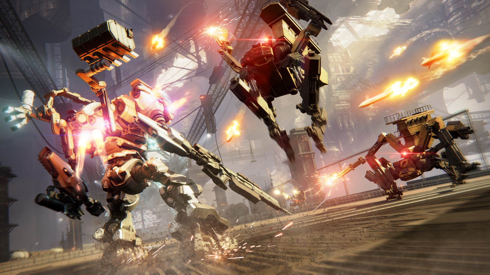

NBA 2023/24 season:One of the most anticipating seasons
September 29, 2023 by Kobe Ho

The 2023/24 NBA season is generating immense excitement among fans.With the emergence of young talent and the return of some seasoned stars, the league is poised for a thrilling year of basketball action. Considering the numerous blockbuster trades that were made during this summer we will see which team has what it takes to win the championship.
Personally, I would love to see a Denver Nuggets vs Milwaukee Bucks Finals. It wouuld be the dawn of a new rivalry. Both teams have won the championship with Denver Nuggets being the most recent champions. However, the bucks have acquired a new guard, Damian lillard, which could slight give them the edge over the Nuggets. Can Denver win the title back to back? Was Dame the missing piece to a another championship for the bucks? Only time will tell.
Fromsoftware's latest Game:Armored core VI
September 30, 2023 by Kobe Ho

One of the key elements that make Armored Core 6 so highly anticipated is its promise to deliver deep mech customization options. The franchise has always thrived on letting players tinker and fine-tune their mechs to suit their preferred playstyle, and the new installment appears to take this to the next level. Players can expect a vast arsenal of weapons, from energy blades to missile launchers, and an extensive array of parts to create truly unique and powerful mechs.
The multiplayer aspect of the game is also generating significant excitement. Armored Core's competitive online battles have long been a fan-favorite, and the prospect of duking it out with custom mechs in stunningly detailed arenas is something that has players eagerly awaiting the release. While details about the game are still somewhat scarce, the return of this beloved series has ignited a spark of anticipation among both longtime fans and newcomers alike, making Armored Core 6 one of the most eagerly awaited titles in the world of mech combat gaming.